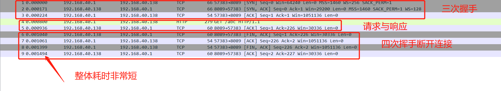

Table of Contents generated with DocToc
keepalive及444状态码
keepalive
该配置官方文档给出的默认值为75s
1、nginx keepalive配置方便起见配置为30s
#配置于nginx.conf 中的 http{}内
keepalive_timeout 30s;

2、nginx server配置
server {
listen 8089;
location /123 {
proxy_pass http://192.168.1.145:8080;
}
location / {
index html/index.html;
}
}
3、开启wireshark监听虚拟网卡（nginx部署于本地vmware上的虚机，nat模式）

4、使用POSTMAN发送请求

5、wireshark过滤观察

keepalive与断开连接

444状态码
适用于屏蔽非安全请求或DDOS防御
1、nginx server配置
server {
listen 8089;
location /123 {
proxy_pass http://192.168.1.145:8080;
}
location / {
index html/index.html;
}
location /abc {
return 444;
}
}
2、开启wireshark监听虚拟网卡（nginx部署于本地vmware上的虚机，nat模式）
3、发送请求

4、wireshark过滤观察
